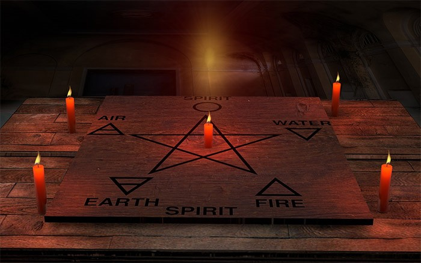
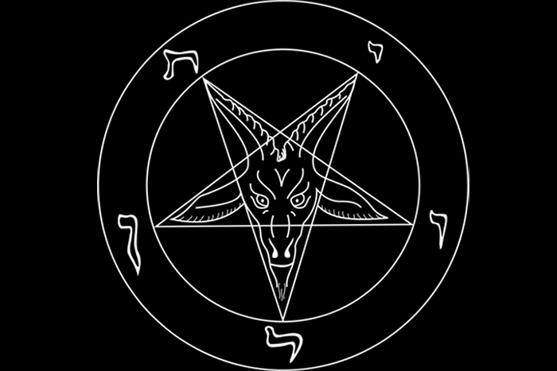
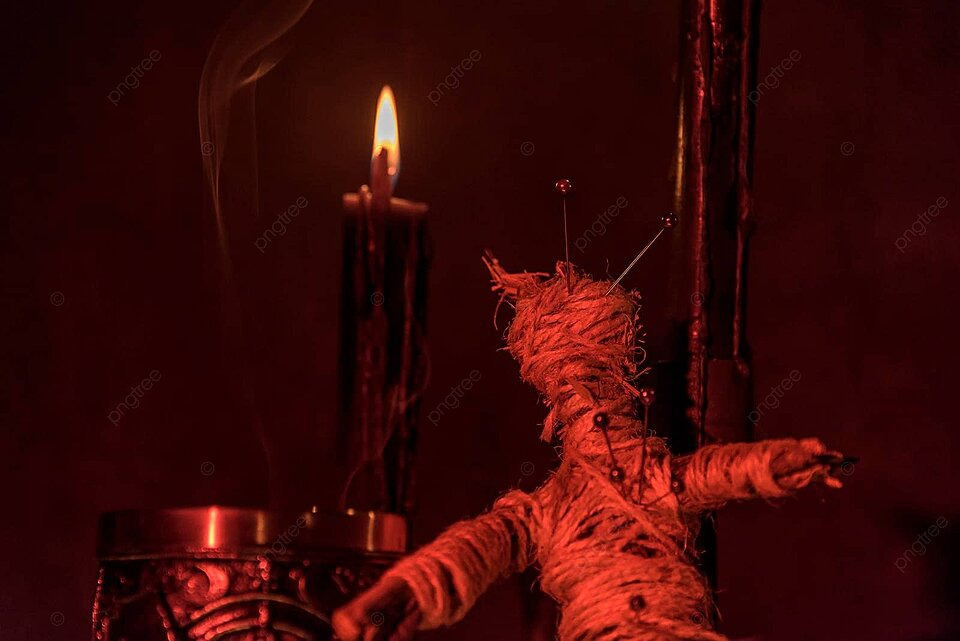
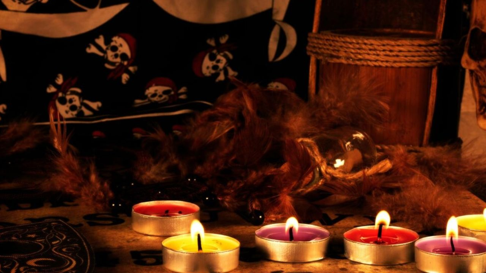

MAGIA NEGRA EN OTROS ESTADOS
Hay varias culturas en el mundo teniendo sus respectivos rituales hechizos y simbología de carácter negativo y destructivo; La brujería y la magia negra todavía se encuentra vigente en todo el mundo, aunque de una forma muy secreta, obviamente. La magia negra es la realización de hechizos con propósitos destructivos o egoístas. Muchas de estas prácticas utilizan distintas versiones de maldiciones, círculos mágicos, muñecos vudú, pociones, y, lamentablemente, sacrificios de animales y hasta humanos.
MAGIA NEGRA EN AMERICA
La brujería en toda América es una mezcla del paganismo de Europa y del chamanismo de los indígenas precolombinos.En este arte oscuro se tienen establecidos rituales para «echar» maldiciones y maleficios a las personas. Supuestamente, las maldiciones pueden ser leves, sólo generando «mala suerte» por determinado tiempo. Sin embargo, también pueden ser más dañinas. En uno de estos ritos se pone a hervir agua para acumular energía emocional y concentrar la ira del brujo. Luego se le introduce sal de roca y una flor cortada. Las palabras del conjuro incluyen repetir el nombre de la víctima.
Sincretismo en América y Europa (relación con el satanismo)
En América y Europa se practica el mismo tipo de ocultismo, debido a la influencia cultural. Se utilizan símbolos antiguos paganos como el pentagrama, el ankh (amuleto egipcio), la triqueta (símbolo indoeuropeo, celta) y la triple luna. Una figura prominente es el llamado «círculo mágico», el cual formaría un espacio con una acumulación de energía sutil, para que se amplifique el poder de los encantamientos; Por supuesto, la magia negra de origen europeo se mezcló con el satanismo y la adoración al Diablo. Es muy conocida la teoría conspirativa de los Illuminati, que realizaría rituales satánicos, invocación de demonios y hechizos a la población (a través de publicidad, películas, música popular, etc.). Los haría a través de simbología mágica.
Santería y Vudú afroamericano
La Santería es una de las creencias mágicas más conocidas, practicada principalmente en el Caribe (Cuba, Puerto Rico, República Dominicana). Según esta religión de origen africano, las estatuillas de santos católicos funcionan como vehículos de los Orishas (dioses de origen africano). Los sacerdotes o santeros usan hierbas, raíces y flores para rituales. Un hechizo lleva el poder de los santos (Orishas), conocido como el poder Ashé, y también se sacrifican animales. Sin embargo, páginas web de Santería establecen que su hechicería es blanca y que la magia negra va en contra de su doctrina. El Vudú se practica principalmente en Haití y Luisiana, Estados Unidos, pero es de origen africano. Los rituales utilizan un lenguaje secreto, danzas intensas con posesiones de espíritus y dietas alimentarias con poderes especiales
Otras creencias en el mundo
En la India, el principal exponente del ocultismo es el Tantrik. Se dice que este brujo es capaz de hacer el bien para una persona, pero dañando a otras. Su poder reside en acumular y aprovechar la energía negativa. Sus rituales incluyen sacrificios y sangre, y en casos extremos se realizan hasta sacrificios humanos. Los Tantrik también tienen su versión del muñeco vudú. En China, la magia negra es conocida como «Ku». Se dice que es peligrosa. Los encantamientos del Ku invocan espíritus humanos. Entre los encantamientos se encuentra la preparación de pociones con venenos de animales (serpientes, escorpiones). Estas pociones serían capaces de manipular la voluntad de otros, enfermar y hasta provocar la muerte.
La brujería en América Latina
La brujería en América Latina, conocida en español como brujería (pronunciado [bɾuxeˈɾi.a]) y en portugués como bruxaria (pronunciado [bɾuʃaˈɾi.ɐ]), es una mezcla compleja de influencias indígenas, africanas y europeas. Las culturas indígenas tenían prácticas espirituales centradas en la naturaleza y la curación, mientras que la llegada de los africanos trajo consigo religiones sincréticas como la santería y el candomblé. Las creencias de brujería europeas se fusionaron con las tradiciones locales durante la colonización, lo que contribuyó al tapiz mágico de la región. Las prácticas varían según los países y las acusaciones se entrelazan históricamente con la dinámica social. A un practicante masculino se le llama brujo, a una practicante femenina se le llama bruja. Cuando los frailes franciscanos de Nueva España llegaron a América en 1524, introdujeron el diabolismo (la creencia en el diablo cristiano) entre los pueblos indígenas de América. Bartolomé de las Casas creía que el sacrificio humano no era diabólico, de hecho estaba muy lejos de serlo, y era un resultado natural de la expresión religiosa. Los indios mexicanos aceptaron con gusto la creencia en el diabolismo y aun así lograron mantener su creencia en deidades creadoras y destructoras. La brujería fue una parte importante de la historia social y cultural del México colonial tardío, durante la Inquisición mexicana. La presencia de la bruja es una constante en la historia etnográfica del Brasil colonial, especialmente durante las diversas denuncias y confesiones dadas a la Congregación para la Doctrina de la Fe de Bahía (1591-1593), Pernambuco y Paraíba (1593-1595). Sin embargo, como escribe la antropóloga Ruth Behar, la brujería, no sólo en México sino en América Latina en general, era una "conjetura de sexualidad, brujería y religión, en la que convergían las culturas española, indígena y africana". Además, la brujería en México generalmente requería una red interétnica e interclasista de brujas. Según la profesora de antropología Laura Lewis, la brujería en el México colonial representó en última instancia una "afirmación de la hegemonía" de las mujeres, los indios y especialmente las mujeres indias sobre sus homólogos masculinos blancos como resultado del sistema de castas.